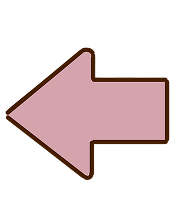
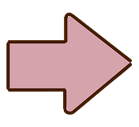
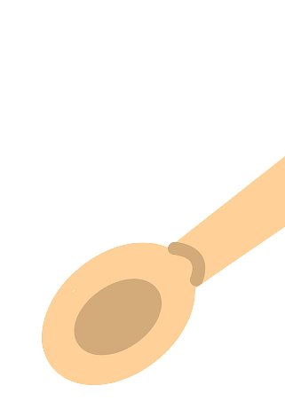

Feel free to check out my previous projects!
← Put recipe cards back

Project Title Loading...
Category / Stack
Short hook description goes here...
See Recipe Details →


×
Detailed Title
Full project content goes here...